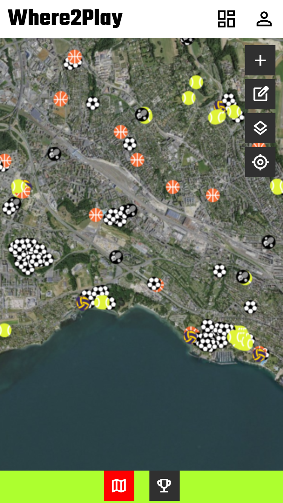

Where2Play
#HTML
#CSS
#Javascript
#PostgreSQL

Contexte
Where2Play est un projet personnel dont l'objectif principal était d'approfondir mes compétences en développement géomatique web. Il s'agit d'une application web mobile permettant de se localiser et de trouver les terrains de sport à proximité en Suisse romande.
Une première version avait été développée via Experience Builder d'ArcGIS Online. Peu satisfait par la flexibilité offerte par l'outil et souhaitant aller plus loin, j'ai développé une deuxième version à partir de rien. L'accent a été mis sur le fonctionnel et l'apprentissage technique plutôt que sur le design
Objectifs
Permettre à tout utilisateur de se localiser, de trouver les terrains de sport à proximité en Suisse romande, mais aussi de contribuer à la base de données en créant ou modifiant des terrains, aussi bien leurs attributs que leur géométrie. Le projet servait également de terrain d'expérimentation pour maîtriser le développement d'une application géomatique web complète, du backend au frontend.
Une deuxième version de l'application a vu le jour. Développé sur la base de plusieurs technologies.